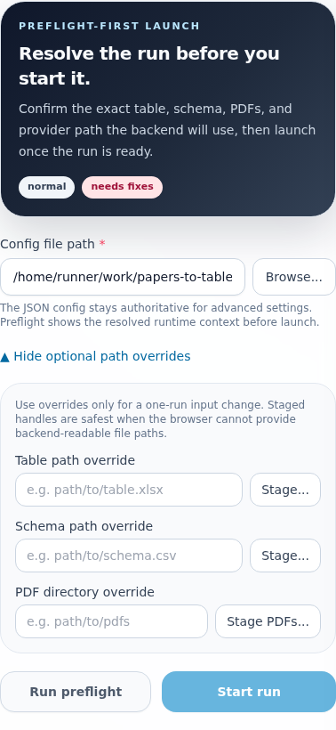
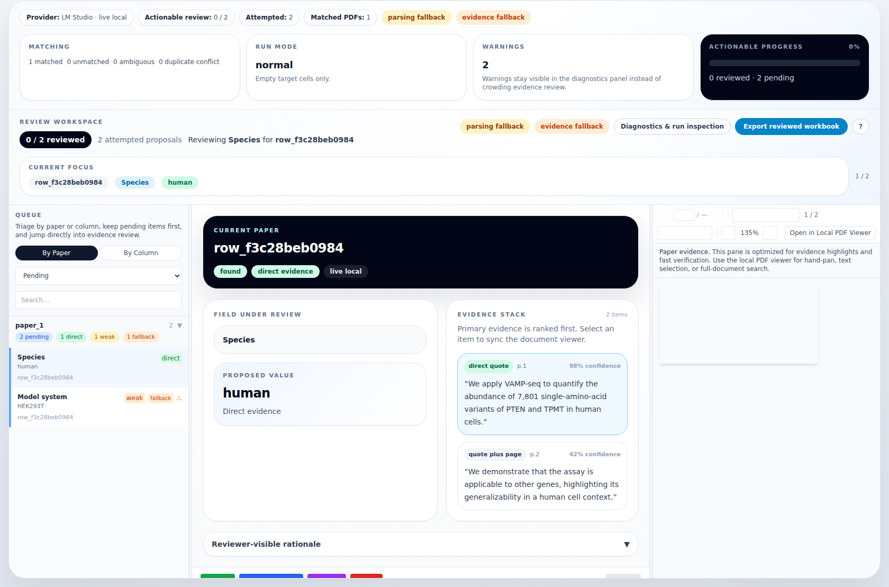
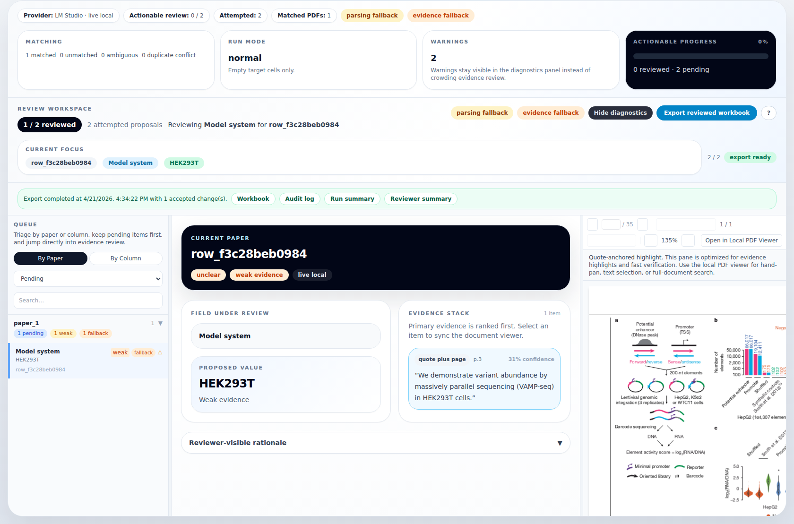

Operator workflow and trust notes¶
This guide stays intentionally close to the implemented app. It documents the current browser workflow, what the screenshots show, and where the app is intentionally strict about trust.
Screenshot-backed workflow¶
1. Preflight-first run setup¶

- Start from the Run tab.
- Enter the backend-readable config path.
- Expand optional path overrides only when you need a one-run override for the table, schema, or PDF directory.
- Use Stage... or Stage PDFs... when browser-selected files need backend-readable staged handles.
- Click Run preflight before launching so the operator can see:
- resolved inputs and runtime locators
- table, schema, and PDF scope
- provider and model readiness
- what the backend will do next
- Only click Start run after the preflight context is acceptable.
2. Queue-first review workspace with a dedicated diagnostics surface¶

- The queue defaults to actionable pending proposals and supports grouped triage by paper or column.
- The detail pane keeps the selected paper, field, proposed value, and ordered evidence list together.
- The evidence panel stays focused on the selected evidence item.
- Unmatched, ambiguous, duplicate-conflict, and warning context lives in Diagnostics & run inspection instead of competing with evidence in the same panel.
- The workspace preserves keyboard shortcuts and explicit review actions.
3. Explicit export and run artifacts¶

- Export stays manual: the reviewer must click Export reviewed workbook.
- Download links appear only after that explicit export.
- Diagnostics are written alongside the workbook and audit log in
{output_dir}/{run_id}/exports/. - For the full run-bundle contract, see run-artifacts.md.
Writing better schema descriptions¶
Treat the schema as the normal extraction contract, even when the table is mostly empty.
- Name the paper-facing fact, not the workflow step.
- Say what counts as evidence for the field.
- Add the unit, scope, or disambiguator when a short column name could mean multiple things.
- Prefer one extractable concept per column.
- For categorical fields, constrain the allowed values instead of relying on reviewer memory.
Concrete CSV example:
column_name,description,field_type,allowed_values
Species,Species used in the assay or model system.,categorical,"[""human"",""mouse"",""yeast""]"
Model system,Cell line or organism context used for the reported experiment.,text,
Number of Conditions,How many distinct experimental conditions were tested in the paper.,number,
Readout,Primary assay readout used to measure expression or activity.,categorical,"[""RNAseq"",""scRNAseq"",""FACS""]"
Evidence semantics¶
- Direct quote: exact highlight anchored to page text.
- Approximate highlight: region-level fallback when exact quote alignment fails.
- Quote + page: text fallback with page reference when highlight geometry is unavailable.
- Inferred reasoning / Calculation: reviewer-visible support types that stay distinct from direct quotes.
- Figure evidence, when present, is labeled separately from text evidence.
Provider, parsing, and fallback truth¶
- The canonical live provider token is
lm_studio. - The UI surfaces provider mode directly (
live local,live cloud,unavailable,disabled, orstub/demowhen applicable). - If the configured live provider is unavailable at startup, the run fails during readiness instead of pretending to complete.
- Parsing fallback, OCR fallback, duplicate conflicts, and evidence fallback stay visible through warnings, summaries, and the diagnostics surface.
- The app does not silently relabel fallback evidence as exact evidence.
Manual export flow¶
- Review proposals in the browser.
- Accept only the values you want written back.
- Click Export reviewed workbook.
- Download the workbook and JSON artifacts, or open them directly from
{output_dir}/{run_id}/exports/.
Only explicitly accepted values are exported. Rejected, unreviewed, and confirmed-no-data outcomes are excluded.
Lightweight trustworthiness checklist¶
- [ ] Confirm the provider mode shown in the UI matches your intended local or cloud path.
- [ ] Review fallback labels instead of treating every proposal as equally grounded.
- [ ] Inspect evidence before export; proposal presence is not proof.
- [ ] Open diagnostics when the run summary shows warnings or matching issues.
- [ ] Use the explicit export step rather than assuming run completion wrote a workbook.
- [ ] Keep the audit log and diagnostics JSON with the exported workbook.
Refreshing the screenshots¶
From the repo root:
cd app
python -m pip install -e ./backend[test]
cd frontend
npm install
cd ../..
python -m playwright install chromium
python -m pytest app/tests/e2e/test_doc_screenshots.py -m e2e --capture-doc-screenshots
These commands assume you start in the repository root. If you are already inside app/ or app/frontend/, adjust the cd steps before running them.
The screenshot test spins up a deterministic local backend and frontend stack, captures the documentation images, and writes them into docs/screenshots/.